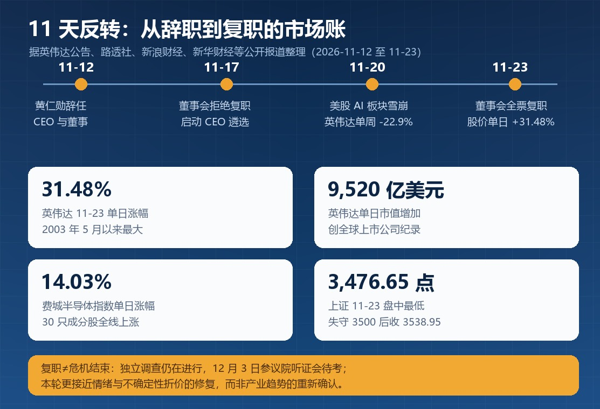

11 月 12 日，英伟达公告黄仁勋辞去总裁、CEO 和董事职务，结束 33 年任期；11 月 23 日，董事会全票表决恢复其全部职务，距离任仅 11 天。市场用一次极端的重新定价回应了这个反转：据新浪财经 11 月 24 日报道，英伟达 11 月 23 日收于 165.05 美元，单日上涨 31.48%，为 2003 年 5 月以来最大单日涨幅，单日市值增加约 9520 亿美元，创全球上市公司纪录。这不是一次普通的人事变动，而是资本对一个关键节点作出的集体表决——它传递的信号很直白：在这个规模上，资本不允许他退场。
下面按时间线和数据把这件事摊开，再回答三个问题：市场为什么反应这么大，所谓 AI 崩盘究竟崩的是什么，以及这轮反弹的边界在哪里。

一、事实层面：11 天里发生了什么
据路透社、新浪财经等公开报道，事件起点可追溯到 10 月 29 日：美国情报机构关注黄仁勋与新加坡数据中心公司 Megaspeed 前高管 Alice Huang 的关系，怀疑其与中国情报机构有关联，中方否认相关指控。11 月 8 日，黄仁勋在致员工信中承认对婚姻不忠，董事会同日启动独立调查，由外部法律顾问 Wachtell Lipton 与前联邦检察官 Joon H. Kim 主持。11 月 11 日，《纽约时报》报道其与公司高管存在另一段关系；11 月 12 日，路透社报道第三段关系，同日英伟达宣布其辞去总裁、CEO 和董事职务，CFO 科莱特·克雷斯出任临时 CEO。
辞职之后的市场反应是连续下跌。据华尔街见闻 11 月 21 日报道，英伟达遭遇七连跌，11 月 20 日单日收跌 14%，全周累计下跌 22.92%，创 2008 年 10 月以来最大单周跌幅，股价较 10 月高点回撤近一半，市值一度蒸发约 2.65 万亿美元，被苹果、微软、Alphabet 反超至美股第四位。费城半导体指数 11 月 20 日单日跌幅接近 10.7%，纳指当周累计下跌约 10%，VIX 恐慌指数盘中触及 40。
中间有过一次明确的拒绝。据路透社 11 月 17 日报道，黄仁勋表示愿意在董事会认为合适时回归，但董事长哈维·琼斯明确表示董事会不打算恢复其 CEO 职务，并已聘请猎头物色继任者；公司同时成立国家安全与出口管制监督委员会。真正的变化发生在 11 月 20 日至 23 日：特朗普公开呼吁给黄仁勋第二次机会，据 Asia Daily 11 月 23 日报道，特朗普直接致电英伟达董事会会议；当天董事会全票通过复职决议，公告称听取了美国政府高层意见，认定复职不构成国家安全风险。特朗普随后在社交平台称这是正确且恰当的决定，并称黄仁勋是伟大的爱国者和国家的财富。
需要说明的是，围绕辞职原因仍有不同说法。《连线》11 月 21 日援引知情人士称，董事会的核心关切并非婚外情本身，而是黄仁勋在近一年的追问中不够坦诚；这一说法尚未获董事会证实，属于媒体报道口径。独立调查目前仍在进行，黄仁勋已同意全面配合。
二、分析之一：市场在为什么投票
单日 31.48% 的涨幅，表面上是对一条人事新闻的反应，实质是对不确定性的重新定价。黄仁勋离任的 11 天里，市场担心的是三件事没人扛得起来：CUDA 生态的技术路线、Blackwell 等新一代芯片的交付节奏、以及全球算力供应链的长期合作关系。这三件事正是英伟达估值的支点。当支点本身出现缺口，估值的折价会以远大于经营数据变化的速度扩大；复职公告只是在一夜之间把这个折价压缩掉了。
换句话说，推动上涨的不是新增利润，而是风险的移除。英伟达 11 月 17 日发布的第三财季营收 1158 亿美元、同比增长 103%，第四财季指引 1300 亿美元，均超预期——但这份财报发布当天，董事长仍在电话会上明确表示不打算恢复黄仁勋的 CEO 职务，股价照样承压。业绩没有变，变的是治理层面的确定性。这恰恰说明，当一家公司深度绑定一个人时，公司治理本身就是一种核心资产。
从资本的角度看，这笔账更容易理解。据新浪财经数据，英伟达 11 月 23 日单日市值增加约 9520 亿美元，而此前一个月市值蒸发约 1.5 万亿美元。对持仓机构而言，创始人去留不是道德评判，而是资产定价的输入变量：一个能维持技术路线和供应链稳定的人离开，可能带来的是万亿美元级别的重估。所谓资本不允许他退场，并不是资本在感情上偏爱谁，而是它在成本收益上承受不起这个变量。特朗普的介入、员工的请愿、硅谷同行的声援，最终都汇入了同一条定价逻辑。
三、分析之二：崩的是什么，不是什么
这轮全球股市调整被很多人称作 AI 崩盘，但从公开数据看，崩的不是技术前景，而是几条被过度延伸的假设。华尔街见闻 11 月 21 日的梳理指出，抛售由四条压力线叠加：其一，市场开始追问巨额数据中心的投资回报周期，从讲故事转向算账；其二，芯片厂商通过投资和担保帮助客户购买芯片的循环融资安排，让收入质量更难判断；其三，美国 10 月 CPI 超预期后，市场对美联储 12 月加息的押注接近确定，高估值资产的折现率上升；其四，拥挤交易的平仓与程序化止损放大了跌幅。Anthropic 上市首日上涨 17.1%、次日回落 8.5% 并一度逼近发行价，正是情绪转向的一个注脚。
这里要区分两件事。AI 需求仍在增长，英伟达的财报也在超预期；受到重估的是估值口径和融资模式的可持续性，而不是产业本身。把这次调整直接读成 AI 终结，会把估值问题误判为技术问题，也会错过真正的风险点——如果资本开支的回报无法兑现，或者循环融资被监管认定存在问题，收缩的将是扩张节奏，而不是技术的存在。
A 股的情况更需要按数据说话。11 月 23 日，上证指数早盘一度失守 3500 点，盘中最低触及 3476.65 点，尾盘翻红收于 3538.95 点、上涨 0.15%；深证成指收于 10454.37 点、上涨 1.93%，创业板指收于 2280.20 点、上涨 3.08%。据新华财经报道，当日沪深京三市成交约 1.56 万亿元，超 4600 只个股上涨，人形机器人、AI 视频、CPO 等板块领涨。因此更准确的表述不是跌到 3400，而是盘中一度跌破 3500 后收复。同一天，恒生指数收跌 0.12%，外资对这波外围反弹的定价相对克制，富时中国 A50 期货也未见追高式买入。
四、趋势判断：反弹的边界在哪里
第一，这更像情绪修复，而不是趋势反转。宏观数据没有突然转好，美联储也没有转向宽松，核心变量只是公司治理层面的一条人事消息。多家机构提示，本轮行情大概率是反弹而非反转：趋势反转的条件尚未成熟，外部流动性压力仍在。11 月 23 日美股的大涨发生在周末信息集中释放、空头回补的背景下，持续性需要后续交易验证。
第二，尾部风险并未出清。独立调查仍在进行，英伟达将新聘首席合规官；黄仁勋将于 12 月 3 日出席美国参议院银行委员会听证会，主题为保护美国 AI 优势与监督出口管制；加州总检察长的调查不因复职而改变；SEC 对会计处理的审查也未见结论。此外，美国国会对董事会决策和政府介入均有质疑，两党议员都提出了质询。这些变量意味着，复职解决的是管理层的确定性，没有解决监管和地缘政治的确定性。
第三，AI 叙事会进入算账阶段。资本市场不会为资本开支规模本身持续付费，未来更看重订单兑现、毛利率和自由现金流。对 A 股而言，光模块、CPO、PCB、服务器代工等与海外算力资本开支绑定的环节，短期会迎来情绪修复，但真正决定行情高度的仍是订单和业绩；国产算力替代的长期逻辑也不会因为一次人事变动而改变。需要警惕的是高开低走与利好兑现，尤其在前一期跌幅较深、资金博弈激烈的位置上。
第四，这件事给公司治理留下了一个反常识的提醒。市场用万亿美元的波动证明，把一家关键公司的命运高度押在一个人身上，短期是最高效的安排，长期却是最脆弱的结构。高效的决策来自他，最大的风险也来自他——当个人健康、家庭、舆情或监管任何一个变量发生变化，都会直接变成市场的系统性风险。对快速成长的中国科技企业而言，真正的护城河不是某个不可替代的人，而是即使这个人暂时离开，技术路线、客户关系和组织机制仍能稳定运转的能力。
结语
11 天的反转，本质是一次压力的集中释放和一次定价的快速修复。资本不允许他退场，不是因为资本懂技术，而是因为它算清了代价：在这个体量上，失去一个关键掌舵人的成本，远高于容忍一个不完美的掌舵人。但市场的掌声不等于问题的答案，调查、听证与资本开支的回报考验还在后面。把这一轮当作风向标之前，先看清它到底证明了什么——证明的是一个人在当下的不可替代，而不是一条趋势已经重新确立。
本文依据公开报道与行情数据整理，仅作行业观察与研究分析，不构成投资建议。市场有风险，投资需谨慎。